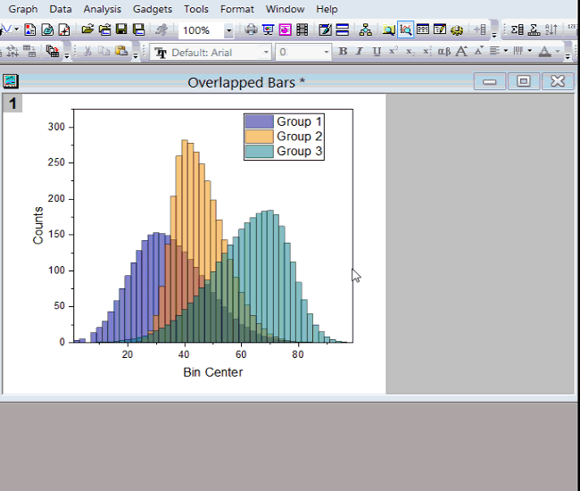

FAQ-650 Wie ändere ich die Größe eines Diagrammlayers?
change-layer-size
Letztes Update: 08.01.2019
2D
Um die Layergröße in 2D-Diagrammen ungefähr anzupassen,
- klicken Sie innerhalb des Layers (nicht auf die Zeichnung) oder drücken Sie die Alt-Taste und klicken Sie innerhalb des Layers, um den Layer auszuwählen.
- Es werden 8 grüne Bedienelemente um den Layer herum angezeigt. Ziehen Sie an den Elementen, um die Größe des Layers zu verändern. Drücken Sie die Strg-Taste, während des Ziehens, um das Seitenverhältnis des Layers beizubehalten.
- Nachdem Sie die Größe des Layers verändert haben, kann es sein, dass sich ein Teil im grauen Bereich befindet. Standard ist, dass nur der weiße Bereich der Grafik gedruckt, exportiert oder kopiert wird. Sie können Grafik: Seite an Layer anpassen wählen, um die Diagrammseitengröße an den Layer anzupassen.
- 
- Oder Sie können Ihre Diagrammseitengröße korrigieren, wenn ein Layer größer ist als die Diagrammseite. Sie können Grafik: Layer an Diagramm anpassen wählen, um die Layergröße so zu verändern, dass sie in die Seite passt (weißer Bereich).
Hinweis:
- Um die Layergröße in 2D-Diagrammen genau anzupassen, wählen Sie Format: Layer aus und legen dann den Layerbereich auf der Registerkarte Größe im Dialog Details Zeichnung fest.
- Wenn Sie in Diagrammen mit mehreren Feldern bzw. mehreren Layern die Größe von anderen Feldern/Layern verändern möchten, verknüpfen Sie die Layer und setzen Sie auf der Registerkarte Größe und Performance die Einheit auf % der verknüpften Layer zuerst.
3D
klicken Sie innerhalb des Layers (nicht auf die Zeichnung) oder drücken Sie die Alt-Taste und klicken Sie innerhalb des Layers, um den Layer auszuwählen. Klicken Sie auf die Schaltfläche In der Größe verändern im Diagramm und ziehen Sie an einem beliebigen Hotspot auf der 3D-Größensteuerung, um die Größe eines 3D-Diagramms in einer bestimmten Richtung zu ändern.
Um ein 3D-Diagramm in der Größe zu verändern und dabei das Seitenverhältnis beibehalten,
- klicken Sie innerhalb des Layers (nicht auf die Zeichnung) oder drücken Sie die Alt-Taste und klicken Sie innerhalb des Layers, um den Layer auszuwählen. Ziehen Sie an den acht blauen Elementen, um die Größe des Layers zu verändern.

Um die Layergröße genau anzupassen, wählen Sie Format: Layer aus und legen dann den Layerbereich auf der Registerkarte Größe im Dialog Details Zeichnung fest.
Hinweis: Wenn Sie die Achsenlänge mit der Achsenlänge verknüpfen, können Sie die Größe des Layer nicht in jede Richtung frei verändern.
Schlüsselwörter:Layergröße, in der Größe verändern, Seitenverhältnis, grüne Elemente, drehen